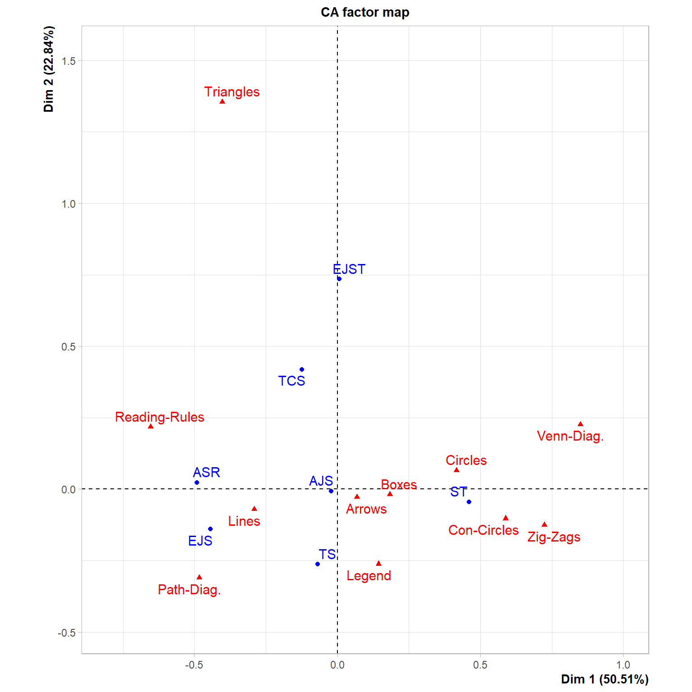
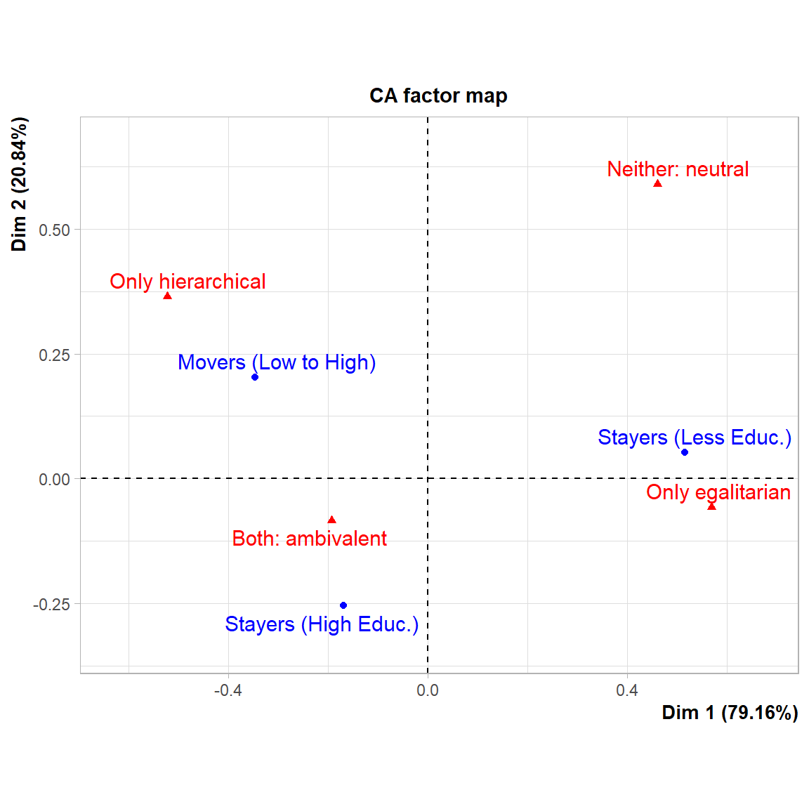

CA and Tabular Bias
A lot of the time Simple Correspondence Analysis (here after CA) is presented as a complex, almost mystical technique, and its association with a relatively obscure data-analytic school in France and later Bourdieu’s Distinction does not help. This is a pity, since CA is actually a quantitative data reduction technique that is perfect for the presenting qualitative data. Particular data from samples typical of those that ethnographers, interviewers, small-sample content-analysts, and historical sociologists deal with frequently.
A lot of the time, these researchers will present key pieces data in tabular form, and ask the readers to use a lot of brainpower to detect patterns by staring at numbers when it would be much easier to a do a simple CA and present the categories in the rows and columns of the table as a biplot of the first two-dimensions of a simple CA. I present three examples from published work showing this “tabular bias” and show how CA could have improved things greatly (and maybe revealed some insights).1 Note that picked these three articles not to drag them, but because I liked them quite a lot, and saw potential for them to be even better than they are.
Example I: Journals and Theory Diagrams
In a fascinating piece, Brett et al. (2020) study the ways sociologists use diagrams to visualize theory ideas. They select seven primarily or heavily “theoretical” journals in sociology (p. 227), and coded the “theory figures” included in a random sample of papers from each journal. The theory figure codes aimed at specifying what sort of visual languages authors used to construct the visualizations (e.g., boxes, arrows, geometrical figures, Venn diagrams and the like). The tabular data is presented as an Appendix (A) to the paper. A two-mode table cross-classifying journals by the characteristics of the theory figures they typically publish These data are reproduced in Table 1. The table has seven rows (for the journals) and eleven columns (for the theory figure motifs)
| Arrows | Circles | Boxes | Lines | Triangles | Zig-Zags | Legend | Reading-Rules | Path-Diag. | Venn-Diag. | Con-Circles | |
|---|---|---|---|---|---|---|---|---|---|---|---|
| AJS | 7 | 5 | 3 | 5 | 0 | 0 | 0 | 3 | 1 | 0 | 1 |
| ASR | 11 | 4 | 5 | 19 | 3 | 1 | 6 | 11 | 10 | 1 | 0 |
| EJS | 14 | 3 | 14 | 24 | 1 | 0 | 3 | 9 | 10 | 0 | 0 |
| EJST | 9 | 5 | 5 | 5 | 4 | 0 | 0 | 2 | 0 | 1 | 0 |
| ST | 36 | 34 | 34 | 24 | 1 | 4 | 15 | 3 | 7 | 17 | 1 |
| TCS | 5 | 6 | 6 | 9 | 3 | 0 | 2 | 6 | 2 | 3 | 0 |
| TS | 23 | 12 | 12 | 20 | 0 | 0 | 8 | 3 | 9 | 0 | 0 |
The bulk of Brett et al.’s paper is concerned with specific examples, and the point is to delve into these to diagnose various problems in the ways sociologists use theory pictures (and end with some really good advice). Brett et al. were not concerned with the relationship between different journals and theory figure motifs, although they could have presented such data in a clear way by using a CA visualization of the table presented in the appendix. This is shown in Figure 1.

The Figure shows that the distribution of theory figure motifs across theory journals is not random, something that would be hard to tell from eyeballing the numbers in Table 1. Indeed, there is a pattern across journals, separating, on the main horizontal dimension, the American Sociological Review (ASR) and the European Journal of Sociology (EJS) on the one end from Sociological Theory (ST) at the other end. Both ASR and AJS are awash in lines and path-diagrams, while ST traffics heavily in circles (concentric and otherwise), zig-zags, boxes, and Venn diagrams. The American Journal of Sociology (AJS), square in the middle, balances between these two tendencies. The second dimension, on the other hand, separates the European Journal of Social Theory (EJST), which somehow gravitates towards triangles, from Theory & Society which likes legends. The arrows theory figure motif is neutral across journals, being placed close to the origin of the plot. Finally, note that, overall triangles is a huge outlier in the secondary plot dimension (way north), suggesting that it is an odd theory motif.
Example 3: Relationship Between Class and Mode of Aesthetic Self-Presentation
In a fascinating paper, van den Haak and Wilterdink—hereafter HW—analyze interview data from a sample of ninety Dutch people more or less evenly divided into three groups by class sitaution: Stayers in the less educated stratum, stayers in the more educated stratum, and movers from the low to the high educated stratum. HW asked this people about their cultural tastes, other people’s cultural tastes, and whether there was such a thing as good and bad taste.
| Only hierarchical | Only egalitarian | Both: ambivalent | Neither: neutral | |
|---|---|---|---|---|
| Stayers (Educated) | 2 | 6 | 22 | 0 |
| Movers (Low Educ to High Educ) | 5 | 3 | 20 | 2 |
| Stayers (Less Educ.) | 1 | 13 | 13 | 3 |
As you might imagine this resulted in a lot of “who am I to judge,” and “to each their own,” and “I wouldn’t want to sound rude,” and so forth. But the surprising thing is that HW also found that some non-substantial minority was not afraid to be judgy while the bulk of their sample shifted between judgy and “who am I…” discourses sometimes in the middle of the same thought!
So HW went back and coded their interview data (divided into the aforementioned classes) into different aesthetic self-presentation groups: People unafraid to produce hierarchical judgments of taste (e.g., “this type of culture is better than that other”), people who consistently stuck to the “who am I…, and to each…” script (egalitarians), and people who wavered between these two (ambivalents). There was also a neutral category for those who didn’t use any of these discourses.

HW presented their results in their Table 1 (p. 422), reproduced here (rows and columns switched) as Table 3. In summarizing their results, HW note that “[a]s Table 1 specifies, the well-educated are clearly over-represented in the hierarchical type and the (much larger) category of the ambivalent type, whereas the less-educated make up larger pro-portions of the egalitarian and the neutral categories (p. 422).” I think this definitely what the table shows, but it is not as evident as HW think because, well, table. A CA of the table would show the result in a better way. Moreover, CA is particularly efficient at summarizing results of two-way tables with a relatively small number of cases like Table 3.
The results are shown in Figure 3. Indeed, stayers among the educated stratum are the most likely to use the ambivalent discourse in HW’s data. In the same way, stayers in the less educated stratum are more consistently egalitarian (in nuanced ways that are better detailed in the paper), and also closer to the neutral pole (upper-right quadrant). However, what the CA plot also shows that is not that evident in the table is that movers into the educated stratum are also the most consistently hierarchical, perhaps in line with Bourdieu’s original thesis that late comers into cultural capital tend to adopt the party line in more rigid and less flexible forms—as detailed in Lizardo (2018).
Conclusion
Rhetorically, sociology is way past the “methods wars,” that characterized the bad old days. Mixed methods are quite normal, and people are used to deploying multiple strategies to answer questions and present data. Yet, some practices are encrusted in tradition, particularly the use of tabular data to present results. Both qualitative and quantitative people use them, but most of the time, a picture is going to be better. One reason is that a two-way, two-mode table is a many-dimensional object (with as many dimensions as cells in the underlying matrix represented in the table) and it needs some reduction in dimensionality to be made comprehensible.
CA can be used for many purposes, but the two things it is really good at is (a) reducing dimensionality usually to \(d = 2\), and visualizing this reduction is synoptic diagram (what Bourdieu loved about it). In the olden days CA was an obscure method ensconced in obscure software. Today, it is just a click away from the interface in all the popular data analysis programs (like R in the present case).
So whenever the urge to present something as a table occurs, especially at a key point in a paper, ask yourself: Wouldn’t CA tell a better story here? I bet in most cases it will.
References
Brett, G., Silver, D., & Beelen,, K. (2020). The right tool for the job: problems and solutions in visualizing sociological theory. Journal for the Theory of Social Behaviour, 50(2), 223-248.
Erikson, E., & Hamilton, M. (2018). Companies and the rise of economic thought: The institutional foundations of early economics in England, 1550–1720. American Journal of Sociology, 124(1), 111-149.
van den Haak, M., & Wilterdink, N. (2019). Struggling with distinction: How and why people switch between cultural hierarchy and equality. European Journal of Cultural Studies, 22(4), 416–432.
Lizardo, O. (2018). Bourdieu, Distinction, and Aesthetic Consumption. In F. F. Wherry & I. Woodward (Eds.), The Oxford Handbook of Consumption (pp. 179–194). Oxford University Press.
Footnotes
All the analyses presented here use the package FactoMineR available at https://cran.r-project.org/web/packages/FactoMineR/index.htm. To get the code necessary to replicate all the analyses and visualizations click on the “view source” button for this page on the context menu on the right.↩︎